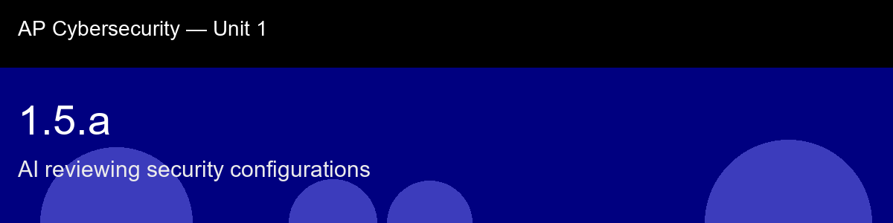

1.5.a recap, AI reviewing security configurations
Nice work today. Here's what to lock in:
- Recap handout:
post-lecture-handout.docx
- Simulation: SimLab
- Self-check quiz: due before next class
The big picture: The rule-engine-versus-graph-model distinction quietly previews something you'll rediscover throughout this course: simpler, transparent detection logic (a fixed rule list) is often the right choice for a learning environment even when more sophisticated ML-based approaches exist, precisely because you can audit exactly why a finding fired. A security tool you can't explain the reasoning of is a tool you can't fully trust, no matter how accurate it tests.
Key terms to lock in:
- Configuration file, a plain-text file specifying system behavior; the primary control surface for hardening.
- Misconfiguration, a setting that deviates from security best practice, intentionally or not.
- Rule engine, a component that checks each config directive against a database of known-bad patterns and emits findings.
- PermitRootLogin, SSH directive controlling whether the root account can authenticate directly; should be no on any production system.
- Hardening, the process of reducing a system's attack surface by disabling unnecessary services and correcting insecure defaults.
- Shift-left security, moving security checks earlier in the development cycle, catching issues before they reach production.
Common misconceptions -- don't fall for these:
- "Default settings are safe because the vendor tested them." → Defaults are tuned for compatibility and ease of setup, not for security. Hardening requires deliberate reconfiguration.
- "Flagging a setting means it must be changed." → A finding is a question, not a command. The human reviewer decides whether a compensating control or documented exception is acceptable.
- "AI config review replaces a security engineer." → It replaces the mechanical checklist step, not the judgment step. The engineer still interprets context, approves exceptions, and owns the outcome.
Learning objective(s): 1.5.A

## 1.5.a recap, AI reviewing security configurations
Nice work today. Here's what to lock in:
- Recap handout: `post-lecture-handout.docx`
- Simulation: SimLab
- Self-check quiz: due before next class
**The big picture:** The rule-engine-versus-graph-model distinction quietly previews something you'll rediscover throughout this course: simpler, transparent detection logic (a fixed rule list) is often the *right* choice for a learning environment even when more sophisticated ML-based approaches exist, precisely because you can audit exactly why a finding fired. A security tool you can't explain the reasoning of is a tool you can't fully trust, no matter how accurate it tests.
**Key terms to lock in:**
- **Configuration file**, a plain-text file specifying system behavior; the primary control surface for hardening.
- **Misconfiguration**, a setting that deviates from security best practice, intentionally or not.
- **Rule engine**, a component that checks each config directive against a database of known-bad patterns and emits findings.
- **PermitRootLogin**, SSH directive controlling whether the root account can authenticate directly; should be `no` on any production system.
- **Hardening**, the process of reducing a system's attack surface by disabling unnecessary services and correcting insecure defaults.
- **Shift-left security**, moving security checks earlier in the development cycle, catching issues before they reach production.
**Common misconceptions -- don't fall for these:**
- "Default settings are safe because the vendor tested them." → Defaults are tuned for compatibility and ease of setup, not for security. Hardening requires deliberate reconfiguration.
- "Flagging a setting means it must be changed." → A finding is a question, not a command. The human reviewer decides whether a compensating control or documented exception is acceptable.
- "AI config review replaces a security engineer." → It replaces the mechanical checklist step, not the judgment step. The engineer still interprets context, approves exceptions, and owns the outcome.
**Learning objective(s):** 1.5.A